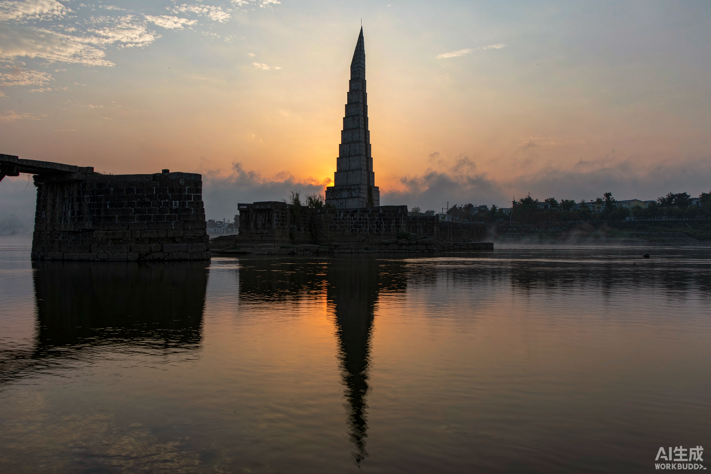
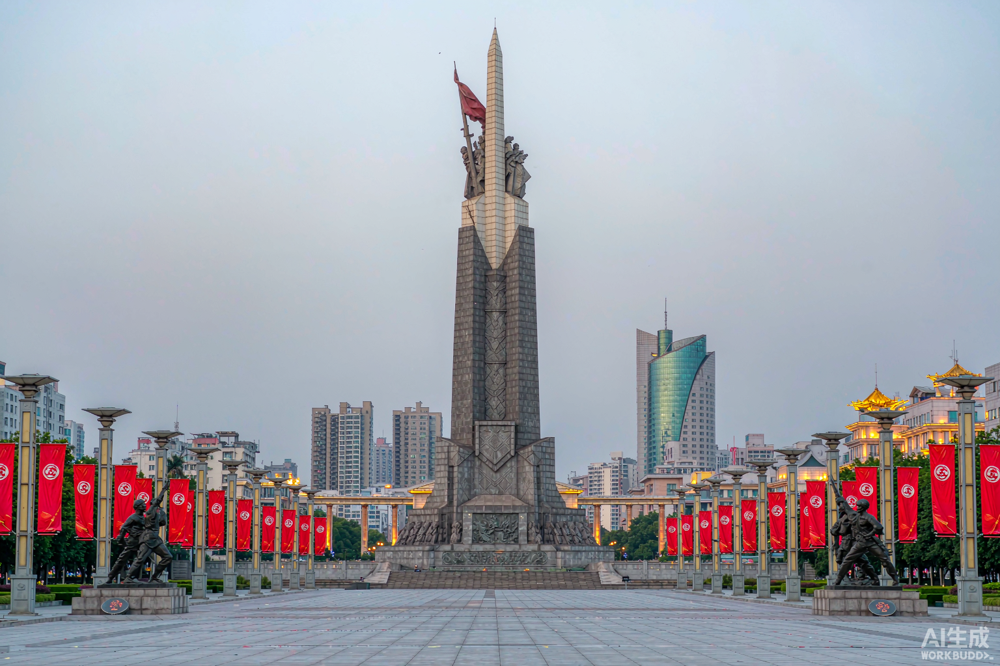
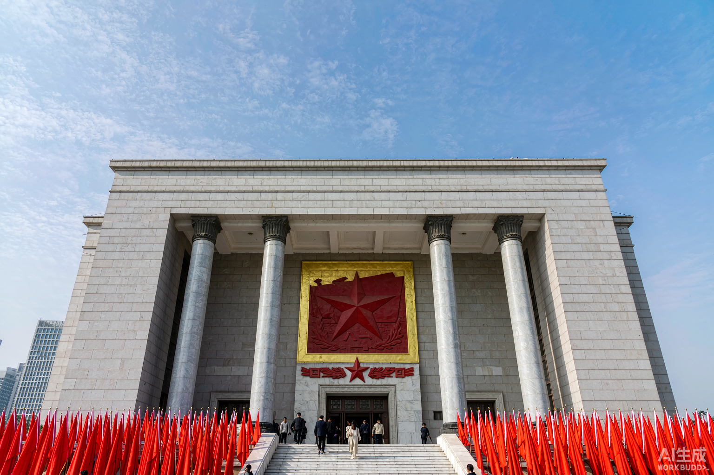
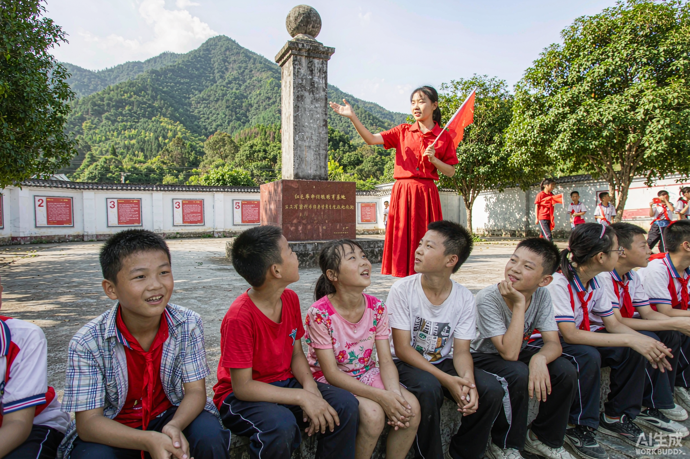

1934 年 10 月，中央红军 8.6 万余人，在 30 万于都人民的守护下， 夜渡 600 余米宽的于都河，踏上二万五千里长征。于都河，因此被称为"长征第一渡"。
34 天，一个被完美保守的秘密
第五次反"围剿"失利后，中央红军主力 8.6 万人奉命向于都地域集结转移。于都人民腾出房屋、送去粮食，把最好的东西留给自己的队伍。
于都河宽 600 余米，无法徒步涉过。沿岸百姓送来 800 多条门板、木料，多位老人献出寿材。14 个渡口夜间架桥、拂晓拆除，8 个渡口靠摆渡送红军过河。
四个夜晚，8.6 万红军将士悄然渡河。工兵架桥、渔翁摆渡、妇女烧茶、孩童守哨——30 万于都人民共同保守着红军转移的秘密，敌人始终一无所知。
渡河后的中央红军突破四道封锁线，血战湘江、四渡赤水、飞夺泸定桥、翻雪山过草地——1935 年 10 月到达陕北，长征胜利。
于都建成中央红军长征出发地纪念园，长征第一渡口、纪念碑、纪念馆成为全国爱国主义教育示范基地，每年数以百万计的游人至此寻根。
走进历史现场 · 全部免费开放

1934 年 10 月，毛泽东、周恩来、朱德等由此渡河。渡口石阶至今保存，江水东流如诉。站在渡口，想象 800 条门板架起的浮桥，和那个被完美守护的秘密。

纪念园核心建筑，碑体如扬帆起航的船帆，正面镌刻"中央红军长征出发纪念碑"。碑前广场不熄的星火雕塑，象征长征精神代代相传。

全国唯一一处展示中央红军长征出发历史的主题纪念馆。一艘渡船、一盏马灯、一双草鞋，复原那段"于都人民真好，苏区人民真亲"的岁月。

长征出发前毛泽东在此居住并召开贫苦工农座谈会。堂屋天井依旧，桌椅如初——从这里出发的，不仅是脚步，更是思想与信念。
跨越时空的精神坐标
坚信正义事业必然胜利。无论湘江血战还是雪山草地，红军的信仰从未熄灭。
不惜付出一切牺牲。平均每 300 米就有一名红军倒下，用生命蹚出中国的新生之路。
遵义会议确立毛泽东的领导地位，中国革命从此把命运掌握在自己手里。
各路红军相互策应、官兵同甘共苦，一条棉被剪成两半的故事传颂至今。
同人民群众生死相依、患难与共。半条被子、一担门板、30 万人守住一个秘密——人民是长征最深的底气。
每一代人有每一代人的长征路。今天的长征，是把家乡建设好、把国家建设好。
于都的红色文化融在乡音里。当年渡河之夜，于都百姓打着火把、烧好茶水守在渡口；姑娘们唱着《十送红军》送亲人过河——"一送里格红军，介支个下了山"，这歌声从于都河畔唱起，唱遍全中国。
唢呐公婆吹、于都盘古茶篮灯是当地非遗，渡江之夜军民同奏同唱。今天的中央红军长征出发地纪念园里，长征渡口中医院旧址、毛泽东旧居错落有致；每逢 10 月 17 日，于都人自发来到渡口，点亮河面上的灯笼——河还是那条河，灯火映着初心。